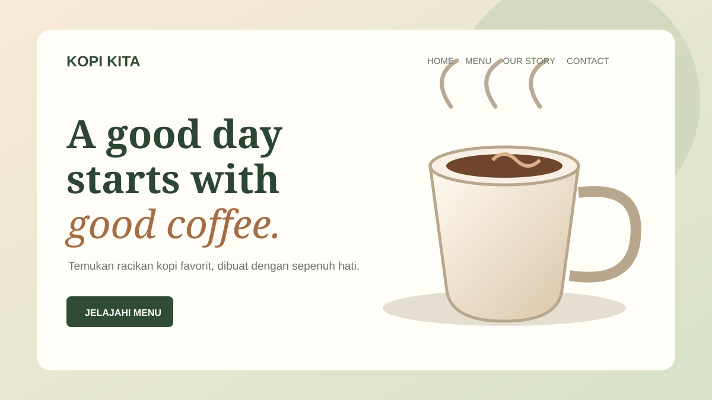

WEBSITE DEVELOPMENT
Website Kopi Kita
Website profil kedai kopi yang menampilkan cerita brand, menu andalan, suasana kedai, serta informasi lokasi. Struktur halaman dibuat agar pengunjung mudah mengenal produk dan menemukan informasi sebelum datang.